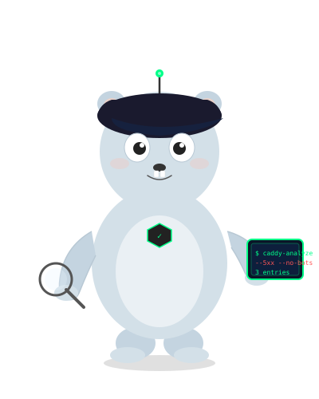

caddy-analyzer is a single-binary log analysis tool and security inspector written in Go. It parses Caddy v2 structured JSON access logs from files, standard input, Docker containers, Kubernetes pods, or systemd journalctl, producing terminal summaries, live streaming views, threat detection reports, and standalone HTML outputs.
docker://), Kubernetes pods (k8s://), and systemd (journalctl://).tail, top, diff, config, guard, block, and unban.iptables auto-blocking.--watch) and standalone dark-mode HTML web reports (-f html).To avoid typing your log file or Docker container path every time you run a command, caddy-analyze offers persistent default configuration and zero-config auto-discovery:
Configure your log source once, and all future commands will read from it automatically:
# Set local default log path (saved to ./caddy-analyzer.json) caddy-analyze config /var/log/caddy/access.log # Or set global default log path for all directories (saved to ~/.config/caddy-analyzer/config.json) caddy-analyze config docker://my-caddy --global
Once configured, you never need to type the log path again!
# All commands read from your configured default log source automatically: caddy-analyze caddy-analyze --detect caddy-analyze top ip caddy-analyze --watch
If no configuration file is set and no path argument is passed, caddy-analyze automatically scans for local log files in ./access.log, ./caddy.log, or /var/log/caddy/access.log.
# Run terminal analysis on default configured log caddy-analyze # Enable threat detection engine caddy-analyze --detect # Filter by IP or CIDR subnet (shows color-coded log listing) caddy-analyze --ip 10.0.0.0/8 # Filter errors excluding bots caddy-analyze --5xx --no-bots # Stream colorized logs in real time from Docker caddy-analyze tail docker://my-caddy # Tail with filters caddy-analyze tail --ip 192.168.1.100 --no-bots # Inspect top client IP addresses caddy-analyze top ip # Compare baseline log vs current log caddy-analyze diff baseline.log current.log # Check or reset default log source configuration caddy-analyze config show caddy-analyze config reset